Todo motor de base de datos tiene un diccionario de datos o, también llamado, catálogo del sistema. El diccionario de datos es el lugar donde se almacenan los metadatos de todos los objetos creados en la base de datos (tablas, vistas, índices, triggers, campos, memoria, etc.). Entiéndase por metadatos, datos de gestión acerca de estos objetos. Por ejemplo, algunos ejemplos de metadatos de una tabla pueden ser su nombre, fecha y hora de creación, nombre de usuario propietario de la tabla, nombre del creador de la tabla, dirección IP desde donde se creó la tabla, cantidad de tuplas grabadas en la tabla, etc. Estos metadatos se constituyen en un insumo muy valioso para que el Administrador de la Base de Datos pueda hacer, de una manera eficiente, su labor.
El diccionario de datos en Oracle se compone de vistas y tablas base. Las vistas son creadas a partir de las tablas base.
Generalmente los usuarios tienen acceso a las vistas, no a las tablas base. Los nombres de dichas vistas tienen unos prefijos que significan lo siguiente:
- USER: Objetos de mi propiedad.
- ALL: Objetos a los cuales tengo acceso.
- DBA: Objetos del sistema.
- V$: Vistas de rendimiento.
Hay una vista muy importante dentro del diccionario de datos de Oracle que se llama DICTIONARY. Esta vista tiene el inventario de tablas y vistas que componen el diccionario de datos y, de cada una de ellas, tiene una breve descripción de lo que almacenan.
Si miramos la estructura de dicha vista, vemos que tiene solo dos campos: el nombre de la vista y su descripción. También observemos que el diccionario de datos de Oracle está compuesto de muchas vistas. En este caso, y puede variar de instalación en instalación, tenemos 4666 vistas, lo cual demuestra la dimensión de dicho diccionario de datos.
| 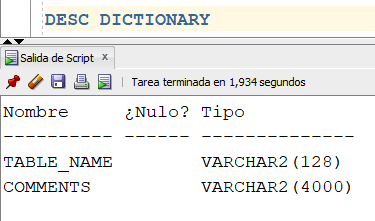 | 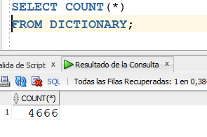 |
Vamos, ahora, a mirar cuántas vistas hay de cada tipo (USER_, ALL_, DBA_, V$_). Por ejemplo, hay 1006 vistas que tienen metadatos acerca del sistema global, 479 vistas que tienen metadatos acerca de los objetos propios del usuario, etc.
| 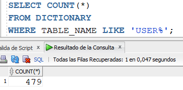 | 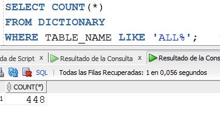 |
| 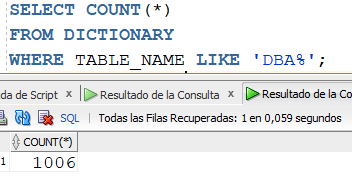 | 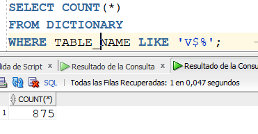 |
Podemos mirar un ejemplo de lo que hay en DICTIONARY. Podemos observar, por ejemplo, que una de las vistas del diccionario de datos se llama USER_TABLES y que, según su descripción, corresponde a los metadatos de las tablas propias del usuario.
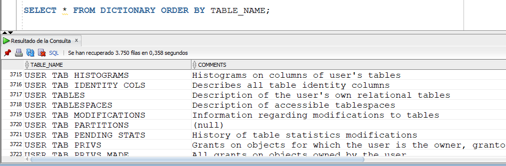
Si miramos la estructura de dicha vista, con DESC USER_TABLES, nos damos cuenta que tiene muchos campos. Muchas de las vistas del diccionario de datos tienen esta característica, por lo cual es una muestra más de la dimensión de lo que está grabado allí.
Para mirar más en detalle, por ejemplo, lo que hay en USER_TABLES, vamos a crear un nuevo usuario llamado DICCION. A partir de este usuario, vamos a crear una nueva tabla, vamos a insertarle algunas tuplas. Y luego, vamos a consultar algunos metadatos de los objetos que se acabaron de crear.
| 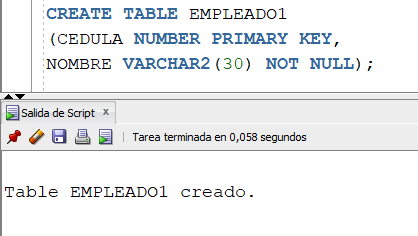 | 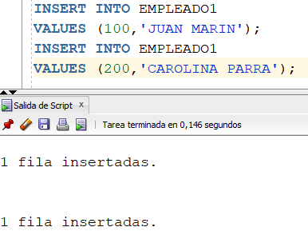 |
Vamos a mirar la vista USER_TABLES, estando conectados con el usuario DICCION. Podemos observar que en dicha vista queda grabada el nombre de la tabla, EMPLEADO1, su ubicación a nivel de tablespace (USERS), entre otros datos.
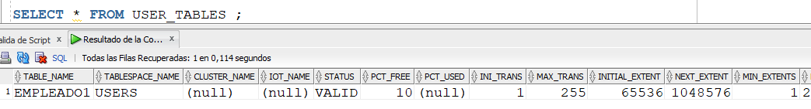
Si necesitamos, por ejemplo, la fecha de creación de la tabla, podemos realizar la siguiente consulta. Nótese que para dicho fin hay que utilizar la vista USER_OBJECTS. Mientras que la vista USER_TABLES se dedica exclusivamente a almacenar los metadatos de las tablas del usuario, la vista USER_OBJECTS almacena metadatos de todos los objetos del usuario (tablas, vistas, triggers, índices, etc.).
Miremos ahora la estructura detallada de una tabla, a nivel de diccionario de datos. De estas vista es de donde extrae la información el comando DESC.
| 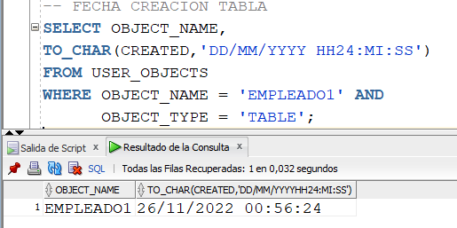 | 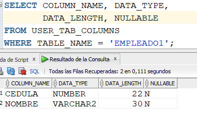 |
Otras vistas importantes del diccionario de datos son las siguientes:
- USER_CONSTRAINTS: Constraints de los objetos del usuario.
- USER_CONS_COLUMNS: Columnas o campos que tienen constraints.
- USER_CATALOG: Tablas, vistas, sinónimos y secuencias del usuario.
- USER_SEQUENCES: Secuencias del usuario.
- USER_SYNONYMS: Sinónimos del usuario.
- USER_INDEXES: Índices del usuario.
- USER_IND_COLUMNS: Columnas que tienen índice.
- USER_VIEWS: Vistas del usuario.
- USER_TABLESPACES: Tablespaces creados por el usuario.
- DBA_ROLES: Roles definidos en el sistema.
- DBA_PROFILES: Perfiles definidos en el sistema.
- DBA_USERS: Usuarios del sistema.
A una tabla o columna, se le puede grabar comentarios descriptivos, de la siguiente manera.
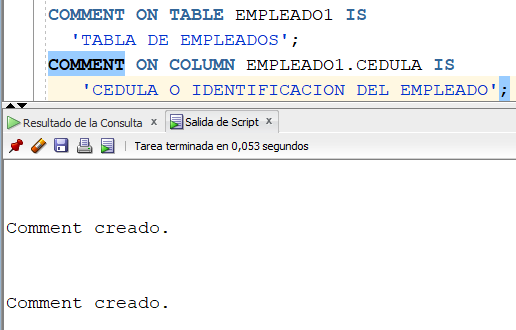
Para consultar dichos comentarios, tenemos las vistas mostradas a continuación.
| 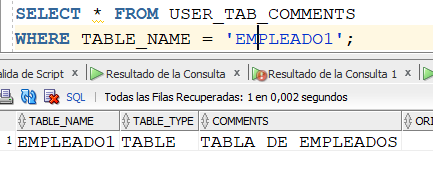 | 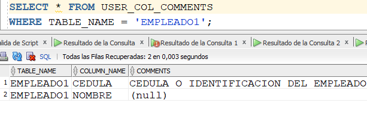 |
Por otra parte, es muy útil buscar las vistas que tengan que ver con algún tema en particular. Por ejemplo, si necesitamos buscar las vistas del diccionario de datos que tengan metadatos acerca de los triggers, podemos ejecutar la siguiente consulta:
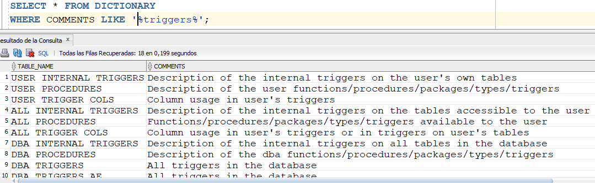
Es importante mencionar que las vistas cuyo nombre comienza por V$ se denominan vistas dinámicas o de rendimiento. En dichas vistas se almacenan metadatos que varían permanentemente de valor. Por ejemplo, las vistas que tienen que ver con el uso de la memoria SGA o del estado actual de la base de datos, tal y como se ve a continuación.
| 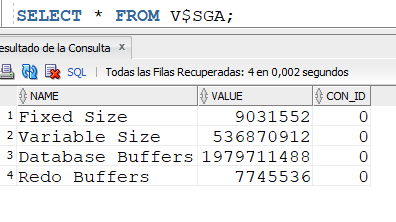 | 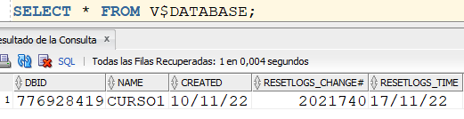 |
Consultas útiles para el DBA
La labor del DBA exige sacar provecho de la información que hay en el diccionario de datos. Generalmente, el DBA va construyendo una biblioteca de consultas útiles que le sirven para fines específicos. A continuación se muestran una serie de consultas útiles para la labor del DBA.
| 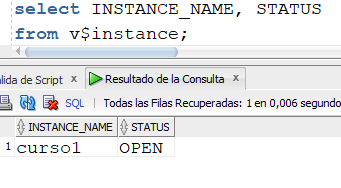 |